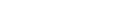

|

|
Explanation
(This Script is Netscape6 Compliant)
Updated - December, 2000.
Preamble:
Lot of people have asked me if a Timer function can be added - so that the Sub-Menus automatically hide themselves, if & when not being used. Sure it can be done. But, not for Free - sorry about that. If you are really serious, check out my terms for Custom Scripts/Web Designing under "OTHER SERVICES" section.
In the true sense of JavaScript/DHTML Code writing, I must tell you this isn't quite the "hierarchical" menu you may have seen elsewhere (see my "comment" above). On the other hand, one can still argue in favour! It has it's advantages. To start with, for a person who isn't very conversant with JavaScript/DHTML - this Script would be easy to modify, while giving it a similar (hierarchical) look. The other major advantage is, I have written/designed it in such a way that, a visitor with an older than 4th Generation browser, will not go back un-satisfied. Neither do you have to create another Menubar for them. All that'll happen is, the "pop-ups" won't work. All links will be visible by default.
There are basically, two parts to this script.
- The First part is the JavaScript portion. This essentially contains two functions which I have named "changein" and "changeout". Of these two, CHANGEOUT hides a division and CHANGEIN shows it.
In the Script section, you'll also find a third function called "nothing". In fact, as the name implies, it really doesn't do anything. As you'll see, I have used this for the MAIN HEAD "<a href=.....>" tags. Therefore, even if anyone clicks these MAIN links, nothing will happen!
- Next step was to create the Style Sheets for each division. In this example, I have 4 MAIN HEADs & 4 SUB-MENUs. These Sub-Menus, as you see, are "HIDDEN" by default. In the Style specification, I have named the Main Heads as List1, List2 & so on, while the Sub-Menus are called Linkpage1, Linkpage2 etc. ( I should clarify, what you name them is NOT important. Call them "TOM" and "JERRY", for all I care!! Also, if you need to add more Heads & Sub-Menus, be my Guest!!)
The all important part is to "position each of the Divisions, correctly. Each "TABLE" containing the Main Headings are positioned at same left margin (In this case, position:absolute; left:10;) but vertical position starts from top 120, increasing next one by 35 (that is, 155, 190 & 225 respectively). To give the Sub-Menus a "hierarchical" appearance, while I have positioned the corresponding sub-menus at identical TOP positions, the left margin is fixed at left:130; so they overlap slightly - given that I have set the MAIN HEAD table widths to 135 pixels.
Here again, where you position them, is a decision you have to take. I just thought, this would look "Cool!.
A few more points to remember -
- So that the Sub-Menus appear over the Main Heads, these should have a higher "z-index" number than the Main Heads.
- You MUST specify the "font-size" of the "a" tag, in pixels, within the Style tags - otherwise these will change according to the Viewers Screen resolution/font size settings. In this example, I have set them to "font-size:12px
|
Uploaded on 02 September 1999 || DBS 1998-2000. All Rights Reserved.
|